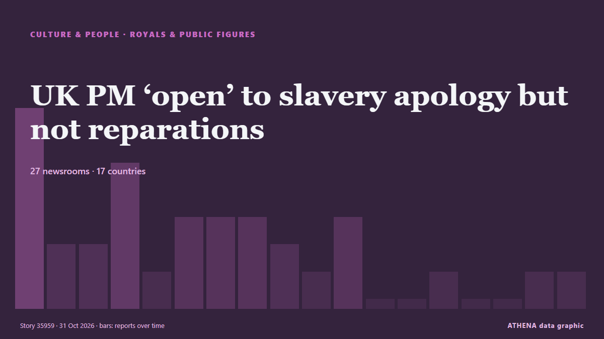

UK PM ‘open’ to slavery apology but not reparations

Andy Burnham made the remarks days before attending a Commonwealth leaders summit in Antigua and Barbuda, as King Charles III tours the Caribbean. de Free Malaysia Today
Relayé de façon indépendante par 28 médias dans 17 pays depuis le 27 oct. ; premier à l'annoncer : Evening Standard (London) ; la couverture est à son pic. Sport et culture sont classés sans évaluation du risque. La confiance est de 91 % (élevée) : 28 médias indépendants le confirment, avec une fiabilité moyenne des sources de 77 %. Qui l'a rapporté : 6 médias en Royaume-Uni · United Kingdom, 5 médias en États-Unis · United States, 4 médias en Malaisie · Malaysia. La couverture s'est étendue de 27 oct. à 31 oct., sur 104 heures.
Ce qui a changé : 4 nouveaux articles de 4 rédactions dans les 24 heures jusqu'au 31 oct..
Premier titre : King Charles’s Caribbean tour: Will he discuss slavery reparations?
Les titres sont affichés en anglais, tels que publiés.
En un coup d'œil
Sélectionné, noté et rédigé par la méthodologie publiée d'ATHENA. Aucun rédacteur n'intervient sur un événement en particulier. Comment il est produit ›
| 27 Oct 02:45 UTC | 7 |
|---|---|
| 27 Oct 08:45 UTC | 2 |
| 27 Oct 14:45 UTC | 2 |
| 27 Oct 20:45 UTC | 5 |
| 28 Oct 02:45 UTC | 1 |
| 28 Oct 08:45 UTC | 3 |
| 28 Oct 14:45 UTC | 3 |
| 28 Oct 20:45 UTC | 3 |
| 29 Oct 02:45 UTC | 2 |
| 29 Oct 08:45 UTC | 1 |
| 29 Oct 14:45 UTC | 3 |
| 29 Oct 20:45 UTC | 0 |
| 30 Oct 02:45 UTC | 0 |
| 30 Oct 08:45 UTC | 1 |
| 30 Oct 14:45 UTC | 0 |
| 30 Oct 20:45 UTC | 0 |
| 31 Oct 02:45 UTC | 1 |
| 31 Oct 08:45 UTC | 2 |
Pourquoi ces chiffres
Importance
Risque
Confiance
La couverture : qui l'a annoncé, et quand
titre tel que publié · ouvre l'original- Evening Standard (London) · Royaume-Uni · United KingdomKing begins tour of Caribbean as calls grow for slavery apology
- Belfast Telegraph · Royaume-Uni · United KingdomKing begins tour of Caribbean as calls grow for slavery apology
- The New York Times (World) · États-Unis · United StatesKing Charles Faces High Stakes Test With Caribbean Tour
- The Guardian · Royaume-Uni · United Kingdom‘We want a full apology for slavery’: Commonwealth at a crossroads as king heads to the Caribbean
- The Straits Times · Singapour · SingaporeKing Charles heads to Caribbean as calls for slavery reparations grow
- Business Recorder · PakistanKing Charles heads to Caribbean as calls for slavery reparations grow
- Free Malaysia Today · Malaisie · MalaysiaKing Charles heads to Caribbean as calls for slavery reparations grow
- Daily Maverick · Afrique du Sud · South AfricaKing Charles heads to Caribbean as calls for slavery reparations grow
- Al Jazeera English · QatarKing Charles’s Caribbean tour: Will he discuss slavery reparations?
- Jamaica Observer · Jamaïque · JamaicaKing Charles to tackle thorny legacy of slavery on Caribbean trip
- Arab News · Arabie saoudite · Saudi ArabiaCharles to tackle thorny legacy of slavery on Caribbean trip
- Evening Standard (London) · Royaume-Uni · United KingdomKing to acknowledge ‘great suffering of the past’ during visit to Caribbean
- Free Malaysia Today · Malaisie · MalaysiaCharles tackles thorny legacy of slavery on Caribbean trip
- France 24 English · FranceKing Charles confronts calls for slavery apology during Caribbean tour
- The Straits Times · Singapour · SingaporeCharles tackles thorny legacy of slavery on Caribbean trip
- The Guardian · Royaume-Uni · United KingdomKing Charles to discuss legacy of slavery with Commonwealth leaders at summit
- Korea Herald · Corée du Sud · South KoreaCharles tackles thorny legacy of slavery on Caribbean trip
- Stuff · Nouvelle-Zélande · New ZealandKing Charles III can't escape Britain's role in slavery as he tours the Caribbean
- ABC News (International) · États-Unis · United StatesKing Charles III can't escape Britain's role in slavery as he tours the Caribbean
- Anadolu Agency (English) · Turquie · TurkeyINTERVIEW - Former Caribbean leader urges slavery apology as Britain’s king visits
- New Straits Times · Malaisie · MalaysiaKing Charles tackles thorny slavery legacy on Caribbean trip
- Africanews (English) · AFRKing Charles III's Caribbean tour renews calls for UK slavery reparations
- Global News (World) · CanadaKing Charles faces calls for apology, slavery reparations on Caribbean tour
- CBC News (alternative feed) · CanadaKing Charles acknowledges 'injustices' of slavery on Caribbean tour. But these residents want action
- PBS NewsHour World · États-Unis · United StatesKing Charles III can't escape Britain's role in slavery as he tours Caribbean nations
- MercoPress · UruguayKing Charles begins a Caribbean tour overshadowed by calls for slavery reparations
- Sydney Morning Herald · Australie · AustraliaKing Charles dances in the Bahamas as calls for slavery reparations grow louder
- Africanews (English) · AFRCalls for slavery reparations grow louder as British king visits Caribbean
- Al Jazeera English · QatarKing Charles on Caribbean tour as calls grow for slavery reparations
- St Lucia Times · Sainte-Lucie · Saint LuciaCARICOM intensifies calls for reparations as King of England visits the region
- CBS News (World) · États-Unis · United StatesKing faces calls for apology, slavery reparations in Caribbean
- ABC News (International) · États-Unis · United StatesKing Charles III arrives in Guyana as part of official nine-day Caribbean trip
- Africanews (English) · AFRKing Charles’ visit to Guyana reignites calls for a British apology and reparations for slavery
- Sky News (World) · Royaume-Uni · United KingdomBurnham 'open' to slavery apology - as King continues Caribbean tour
- Free Malaysia Today · Malaisie · MalaysiaUK PM ‘open’ to slavery apology but not reparations
- IOL · Afrique du Sud · South AfricaSlavery and submerging islands: King Charles battles health and history on Caribbean tour